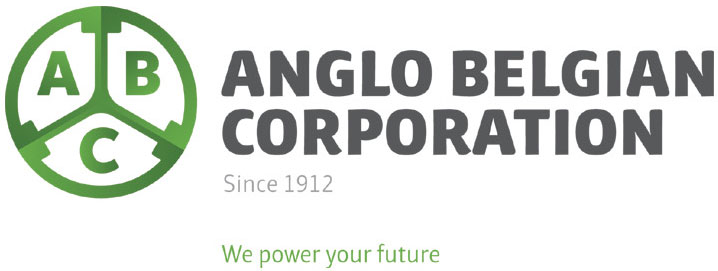
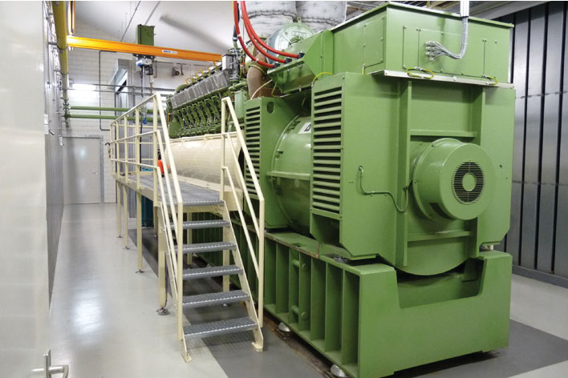
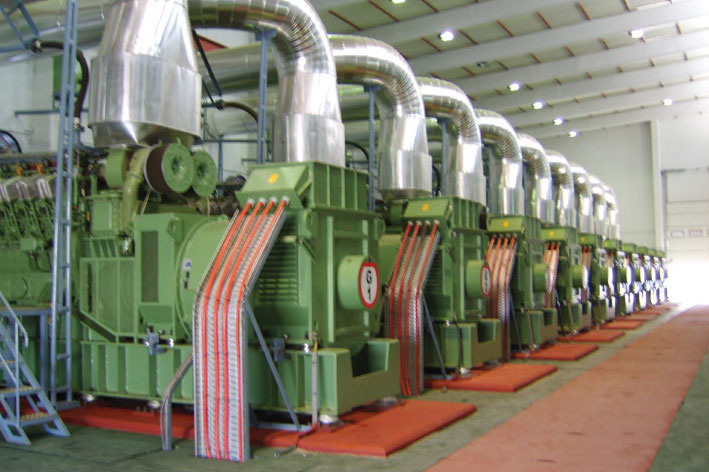
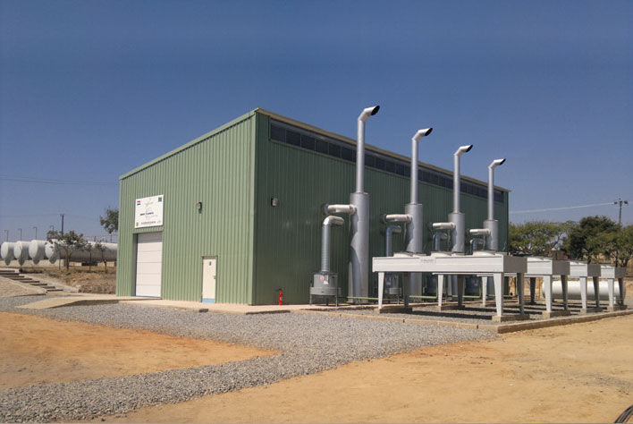

Anglo Belgian Corporation is a power solutions provider. Located in Ghent it builts diesel and gas engines and gensets since 1912.
Our principal markets :
■ Power generation (powerplants up to 50MW),
■ Locomotive Traction,
■ Marine propulsion.
Some references :
■ Brazzaville powerplant (33 MW on HFO),
■ Zeebrugge gas terminal (2 MW Dual Fuel genset),
■ Voith Maxima 40 cc hydraulic locomotives,
■ Belgian NMBS : 170 shunt locomotives,
■ Navy vessels : Belgium (1), Bulgaria (3), France (4), Turkey (9).
■ DUS gensets for nuclear plants (EDF - France)
- Blayais (4 units)
- Bugey (4 units)
- Chinon (4 units)
- Chooz (2 units)
- Civaux (2 units)
- Cruas (4 units)
- Dampierre (4 units)
- Fessenheim (2 units)
- Gravelines (6 units)
- Saint laurent (2 units)
- Tricastin (4 units)


Contact Person
Mr Bernardo Rodriguez
M br@abcdiesel.be
M tb@abcdiesel.be
T + 32 9 267 00 00
F + 32 9 267 00 67
W www.abcdiesel.be
Wiedauwkaai 43
B 9000 Gent
BELGIUM
Netherlands - Kesteren 4.5 MW bio powerplant
DRC - 33 MW Brazzaville powerplant
Tanzania - 5 MW Sumbawanga powerplant
Contact Person
Mr Bernardo Rodriguez
M br@abcdiesel.be
M tb@abcdiesel.be
T + 32 9 267 00 00
F + 32 9 267 00 67
W www.abcdiesel.be
Wiedauwkaai 43
B 9000 Gent
BELGIUM